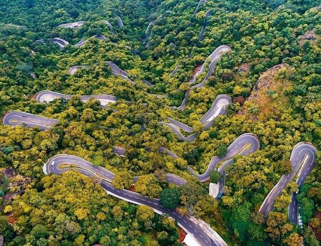
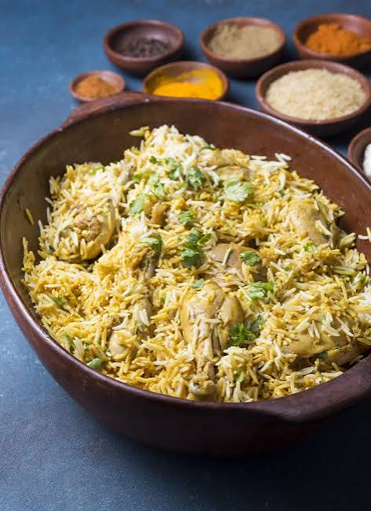
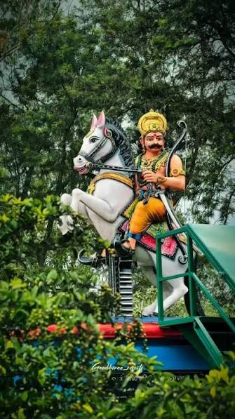
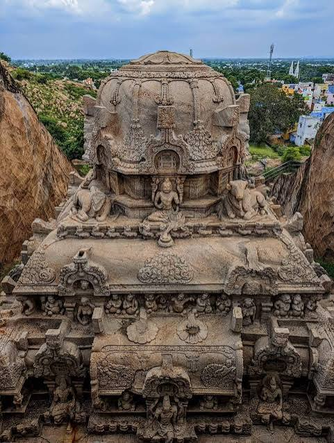
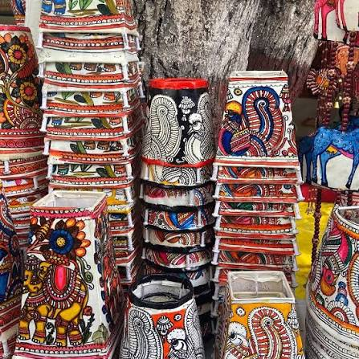

Discover the heritage, nature, culture and spirit of Namakkal District — The Poultry Capital, Transport Hub, and Home to the Mystical Kolli Hills.
SCROLL DOWN ↓India's largest egg production center
4.5+ Cr Eggs/DayPremier lorry body building hub
50,000+ TrucksMountain sanctuary of medicinal herbs
70 Hairpin Bends18-ft Anjaneyar & Rock Fort citadel
8th Century MarvelsFertile paddy, tapioca & sugarcane belt
River Cauvery BasinNestled between the Kaveri river and the Eastern Ghats, Namakkal is an iconic district in Tamil Nadu renowned for rock-cut architecture, industrial dynamism, and serene hill stations.
Where is Namakkal? Located in the central Kongu region of Tamil Nadu (approx. 380 km southwest of Chennai and 160 km east of Coimbatore), Namakkal derives its name from "Namagiri" — the single massive monolithic rock rising majestically in the heart of town.
Bifurcated from Salem District on 1st January 1997, Namakkal District covers an area of 3,368 sq.km. It is bounded by Salem to the north, Tiruchirappalli to the east, Karur to the south, and Erode to the west. The river Kaveri flows gracefully along its southern and western boundaries, turning the valley into a verdant agricultural haven.
The climate is typically tropical, with refreshing cool breezes sweeping down from Kolli Hills (rising up to 1,300 meters above sea level). Namakkal is also the birthplace of Kavignar Ramalingam Pillai, Tamil Nadu's revered freedom fighter and first poet laureate.
The Adiyaman ruler carved the monolithic cave shrines of Sri Ranganatha and Sri Lakshmi Narasimhaswamy directly into Namakkal rock.
Expansion of Tiruchengode Arthanareeswarar hill temple and fortifications atop the single monolithic cliff.
The impregnable Namakkal Fort was reinforced by Madurai Nayaks and later garrisoned by Hyder Ali and Tipu Sultan during the Anglo-Mysore wars.
Kavignar V. Ramalingam Pillai inspired millions during the Salt Satyagraha with immortal lines: "Kathiyindri Raththamindri Yuththamondru Varugudhu".
Officially created as the 30th district of Tamil Nadu, ushering in an era of industrial, transport, and poultry revolutions.
Every taluk in Namakkal possesses a distinct personality, from mountainous tribal retreats and river bank farms to textile capitals and industrial epicenters.
Whether you crave mist-laden mountain hairpin curves, thunderous cascading waterfalls, or centuries-old monolith temples, Namakkal promises an unforgettable expedition.
Immerse yourself in centuries of Kongu folklore, the valor of Archer King Valvil Ori, grand chariot temple celebrations, and world-famous culinary recipes.

Renowned for authentic native dishes including Namakkal Kozhi (Chicken) Biryani, fiery Pallipalayam Chicken sauteed with dry red chillies and coconut slivers, Kaveri river fish curry, and wholesome millet banana leaf feasts.

Celebrated every August (Aadi 17 & 18) in Kolli Hills to honor King Valvil Ori, one of the seven great patrons (Kadai Ezhu Vallalgal). Features tribal archery contests, traditional flower shows, and thrilling Karagattam folk dances.

The 18-foot monolithic Lord Anjaneyar stands directly open to the sky, gazing across to Lord Narasimha residing in the cave shrine. During Panguni Uthiram and Hanuman Jayanthi, grand thousands-strong chariot processions draw devotees worldwide.

Kolli Hills is home to indigenous tribal communities preserving ancient ethnomedicinal herb gathering, organic pepper farming, wild honey harvesting, and hill-terrace cultivation traditions passed down through millennia.
Driven by hard work and pioneering entrepreneurship, Namakkal is globally recognized for four thriving economic pillars.
Namakkal is India's preeminent poultry hub, producing over 4.5 to 5 crore table eggs every single day. The district supplies eggs to midday meal schemes across Tamil Nadu and Kerala, as well as exporting fresh eggs to Middle Eastern and international markets. The National Egg Coordination Committee (NECC) prices set here influence poultry trade nationwide.
Known as the "Transport City", Namakkal owns and operates one of India's largest commercial truck fleets (over 50,000 lorries and trailers). Skilled local artisans in Namakkal workshops fabricate customized, aerodynamic wooden and steel lorry bodies for Ashok Leyland, Tata, and BharatBenz chassis supplied across the country.
The southern tracts along the Kaveri river (Paramathi-Velur, Mohanur, and Kabilarmalai) thrive with lush green paddy fields, betel vine plantations, sugarcane, and bananas. Namakkal is also Tamil Nadu's leading producer of tapioca (cassava), supporting dozens of sago and starch factories supplying the food industry.
Kumarapalayam is celebrated as the "Textile Town", bustling with thousands of power looms producing export-quality towels, lungis, and cotton fabrics. Concurrently, Tiruchengode is internationally acclaimed for heavy-duty borewell rig fabrication, deploying drilling rigs to Africa, the Middle East, and all across India.
Explore a rich visual journey through misty hills, sacred sanctums, industrial giants, and everyday life in Namakkal. Click any photo to view in fullscreen.
Watch immersive video clips capturing Kolli Hills' legendary hairpin curves, the thunderous Agaya Gangai waterfall, festive chariot celebrations, and bustling truck body workshops.
Conveniently connected along National Highway 44 (Kashmir to Kanyakumari highway) and the Indian Railways network, Namakkal is easily accessible for weekend travelers and pilgrims alike.
Directly on NH 44 (Salem–Namakkal–Karur). 1 hr from Salem (52 km), 1.5 hrs from Karur (45 km), and 4 hrs from Bengaluru (245 km). Excellent 4-lane expressway connectivity.
Namakkal Railway Station (NMKL) is a key stop on the Salem–Karur broad gauge line, with direct express trains linking Chennai, Bengaluru, Palakkad, and Tiruchirappalli.
The Central Bus Stand operates round-the-clock SETC, TNSTC, and private luxury buses connecting Chennai, Coimbatore, Madurai, Bengaluru, Erode, and Tiruchirappalli.
Nearest airport is Tiruchirappalli International Airport (TRZ) (85 km / 1.5 hrs). Salem Domestic Airport (SXV) is 60 km away, and Coimbatore Airport (CJB) is 150 km away.
Seek blessings before the magnificent 18-ft monolithic Lord Hanuman statue and receive sacred butter prasadam.
Explore the 8th-century Adiyaman rock-cut shrine, then ascend the stone steps of the single-rock citadel for 360° panoramic city views.
Savor authentic local chicken dishes, Kozhi Biryani, or wholesome vegetarian thali with fresh buttermilk.
Drive 30 km to Tiruchengode and marvel at the 2,000-year-old half-male, half-female deity shrine atop the Nagamalai red hill during sunset.
Embark on the thrilling 35 km ghat road drive from Sendamangalam through 70 hairpin curves into the cool misty mountains (1,300m elevation).
Visit the ancient Shiva shrine, then descend the scenic stone stairs down the gorge to feel the thunderous spray of the 300-ft mountain cascade.
Witness an ethereal sunrise above the cloud canopy overlooking the deep forested valleys of the Eastern Ghats.
Stroll through rose nurseries and medicinal plant herbariums; purchase authentic Kolli black pepper, clove, cardamom, and wild honey before descent.
Click any landmark or taluk node on the map below to view details, driving distance from Namakkal Central, coordinates, and must-visit attractions.
Experience the vibrancy of community life in Namakkal, where timeless temple traditions, tribal celebrations, and agricultural gratitude come alive year-round.
Essential emergency helpline numbers and administrative support lines for tourists and residents. On mobile, tap any number to dial instantly.
24/7 Free medical emergency and trauma response fleet across Namakkal district.
📞 Dial 108Emergency fire fighting and disaster rescue stations across all 8 taluks.
📞 Dial 101Main District HQ Super-Speciality Hospital on Thuraiyur Road, Namakkal.
📞 04286-280000Office of the District Collector & District Magistrate, Master Plan Complex.
📞 04286-281101Round-the-clock safety, counseling, and legal emergency aid for women.
📞 Dial 1091National toll-free emergency service for children in need of protection.
📞 Dial 109824-hour voluntary blood donation and emergency blood supply division.
📞 04286-280108